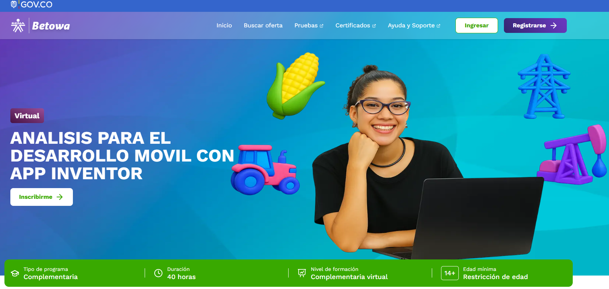
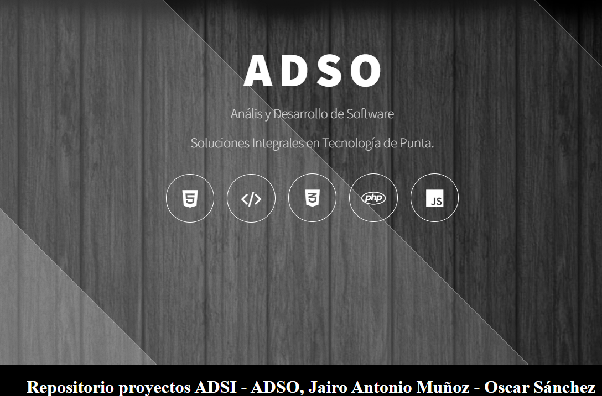
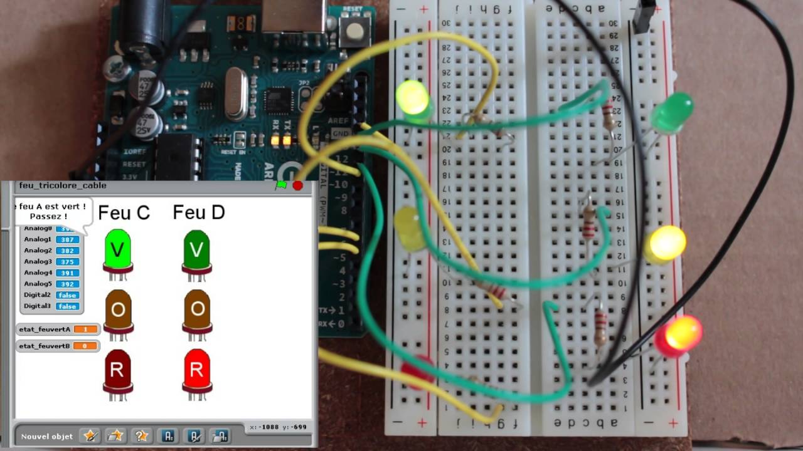

Inicio
Bienvenidos a este portafolio académico, en el cual se presenta un recorrido por la exploración, análisis y aplicación de modelos de evaluación educativa en conjunto con el uso de recursos educativos digitales (RED)...
Modelos de evaluación y RED
En este apartado se analizan diferentes modelos de evaluación educativa y el uso de recursos digitales como herramientas para enriquecer el proceso.
Marco de referencia para revisar y calificar objetos de aprendizaje en múltiples dimensiones. Un objeto de aprendizaje "es un recurso de información o software interactivo utilizado en el aprendizaje online" (Otamendi et al., 2022).
Criterios de evaluación:- Calidad del contenido
- Alineación con objetivos de aprendizaje
- Retroalimentación y adaptación
- Motivación
- Diseño de presentación
- Usabilidad
- Accesibilidad
- Reusabilidad
- Conformidad con estándares
Métrica o escala de valoración. Escala tipo Likert de 1 a 5.
Metodología. Revisión por expertos con participación convergente.
Instrumento de evaluación. Rúbrica LORI.
Modelo hispano que valora la calidad de objetos de aprendizaje en tres ejes: pertinencia, diseño estético-funcional y diseño instruccional.
Criterios de evaluación:- Permanencia y actualidad
- Claridad del lenguaje
- Diseño visual
- Funcionamiento técnico
- Coherencia metodológica
- Evaluación del aprendizaje
- Accesibilidad y licenciamiento
Métrica o escala de valoración. Escala ordinal o numérica 1–5.
Metodología. Revisión sistemática con listas de cotejo.
Instrumento de evaluación. Listas de cotejo ECOBA.
Propuesta que operacionaliza la evaluación de calidad en dimensiones pedagógicas, técnicas y de usabilidad.
Criterios de evaluación:- Calidad pedadógica
- Diseño y usabilidad
- Aspectos técnicos
- Accesibilidad
Métrica o escala de valoración. Escala Likert 1–5.
Metodología. Revisión por pares.
Instrumento de evaluación. Ficha CODA.
Norma internacional que define características y subcaracterísticas de calidad del software.
Criterios de evaluación:- Funcionalidad
- Fiabilidad
- Usabilidad
- Mantenibilidad
- Portabilidad
Métrica o escala de valoración. Métricas cuantitativas de desempeño.
Metodología. Ensayos de calidad de producto y uso.
Instrumento de evaluación. Listas de verificación ISO 9126.
Estructura jerárquica de calidad con atributos como utilidad, mantenibilidad y portabilidad.
Criterios de evaluación:- Utilidad
- Mantenibilidad
- Portabilidad
Métrica o escala de valoración. Métricas cuantitativas.
Metodología. Evaluación basada en árbol de calidad.
Instrumento de evaluación. Árbol de calidad de Boehm.
Propone 11 factores agrupados en tres áreas principales: operación del producto, revisión del producto y transición del producto.
Criterios de evaluación:- Operación del producto (correctitud, confiabilidad, eficiencia, integridad, facilidad de uso)
- Revisión del producto (mantenibilidad, flexibilidad, capacidad de prueba)
- Transición del producto (portabilidad, reusabilidad, interoperabilidad)
Métrica o escala de valoración. Escalas de 1 a 5.
Metodología. Enfoque FCM (Factor–Criterio–Métrica).
Instrumento de evaluación. Rúbrica McCall y matrices de evaluación.
Seleccionando modelos
Frente a los modelos expuestos y en referencia de cada uno de ellos, los dos que mejor se acomodan a la instucion SENA son:
Modelo 1: LORI (Learning Object Review Instrument)
- Evalúa integralmente tanto la calidad pedagógica como los aspectos técnicos de los RED.
- Su escala Likert de 1–5 facilita la retroalimentación entre instructores y aprendices.
- Ayuda a garantizar que los recursos sean accesibles e inclusivos, alineado con la política de educación abierta del SENA.
- Requiere tiempo y formación de los instructores para aplicar la rúbrica de manera uniforme.
- No incorpora de manera explícita el análisis de competencias laborales ni la articulación con el sector productivo, que es clave en la misión del SENA.
Justificacion de selección: El modelo LORI es adecuado para el SENA porque permite evaluar los recursos en dimensiones clave como calidad del contenido, alineación con objetivos de aprendizaje, usabilidad, accesibilidad y motivación del estudiante. El SENA trabaja con programas técnicos y tecnológicos, donde es indispensable que los contenidos estén bien estructurados y sean reutilizables en distintos cursos.
Fortalezas para el SENA:Modelo 2: ECOBA (Evaluación de Contenidos Basada en el Aprendizaje)
- Evalúa criterios esenciales como claridad del lenguaje, diseño instruccional y accesibilidad.
- Promueve la elaboración de contenidos contextualizados y actualizados, fundamentales en áreas como desarrollo de software.
- Favorece el autoaprendizaje y la adaptabilidad a diferentes niveles de formación (desde básico hasta avanzado).
- Tiene menor robustez técnica comparado con ISO/IEC 9126 o McCall, ya que se enfoca más en la dimensión pedagógica.
- No siempre contempla los aspectos de interoperabilidad y compatibilidad tecnológica, claves en software educativo.
Justificacion de selección: ECOBA se ajusta al SENA porque fue diseñado en el contexto iberoamericano, con un enfoque claro en pertinencia, claridad y accesibilidad de los recursos educativos. Es un modelo cercano a la realidad de los programas de formación técnica y tecnológica, por lo que responde mejor a las necesidades de los aprendices del SENA.
Fortalezas para el SENA:.accordion-flush class. This is the third item's
accordion body. Nothing more exciting happening here in terms of content, but just
filling up the space to make it look, at least at first glance, a bit more
representative of how this would look in a real-world application.Recursos educativos digitales
Área de conocimiento: Desarrollo móvil con enfoque de análisis y creación de aplicaciones mediante App Inventor.
Nivel o grado de aplicación: Curso complementario virtual; nivel introductorio, dirigido a personas mayores de 14 años. Datos del autor(es):Institucional del SENA; diseño y gestión por la Dirección de Formación Virtual del SENA.Enlace al repositorio donde se encuentra alojado el RED: Plataforma Betowa (SENA Virtual).
Enlace al RED: ANÁLISIS PARA EL DESARROLLO MÓVIL CON APP INVENTOR
Descripción del RED:Curso de 40 horas que enseña a definir plataformas móviles según especificaciones técnicas y necesidades del usuario, utilizando App Inventor como herramienta visual.
Características del RED y posibilidades de uso:- Acceso virtual completo y gratuito.
- Dirigido a formación técnica complementaria.
- Metodología práctica mediante aprendizaje activo con App Inventor.
- Facilita creación de apps sin uso de código, ideal para iniciación.
- No profundiza en aspectos avanzados de programación.
- Requiere conexión a Internet y es complementario, no certificante.
- Alineado a usabilidad y accesibilidad por su interfaz visual.
- Desarrollo pedagógico práctico, secuenciado y alineado con competencias técnicas.

Área de conocimiento: Aseguramiento de calidad mediante pruebas de software.
Nivel o grado de aplicación: Curso complementario virtual; nivel técnico introductorio (mayores de 14 años). Datos del autor(es):Plataforma institucional SENA Virtual, coordinado por la Dirección de Formación Virtual del SENA.Enlace al repositorio donde se encuentra alojado el RED:Plataforma Betowa (SENA Virtual).
Enlace al RED: MANEJO DE PRUEBAS DE SOFTWAREDescripción del RED:Curso de 40 horas que permite aprender a probar soluciones de software de acuerdo con parámetros técnicos y modelos de referencia.
Características del RED y posibilidades de uso:- Formación virtual accesible desde casa.
- Orientación práctica a casos reales de pruebas de software—planificación, ejecución, análisis.
- Fortalece competencias fundamentales para garantía de calidad en software.
- Breve duración que limita profundidad.
- Requiere herramientas externas para realización práctica (gestión de casos de prueba).
- Enfoque alineado con estándares de pruebas (IEEE, ISTQB), evidenciado en objetivos de aprendizaje.
- Diseño pedagógico claro y orientado a competencias técnicas.

Nombre del RED: Sinnec Tecnología - Hosting Propio de proyectos de software
Área de conocimiento: Desarrollo e implementación de soluciones empresariales en software (consultoría TI, gestión tecnológica, GovTech, LegalTech, FinTech).
Nivel o grado de aplicación: Formación técnico-profesional avanzada — nivel complementario y de actualización profesional. Datos del autor(es): Jairo Antonio Muñoz - Oscar Javier SánchezEnlace al repositorio donde se encuentra alojado el RED: Sitio web de Sinnec Tecnología
Enlace al RED: Portal Sinnec Tecnología
Descripción del RED:Portal web con panel de control que permite el acceso a los aprendices para crear sus desarrollo de software en tiempo real, servicios y casos de uso en desarrollo de software a medida y consultoría TI, con enfoque relevante para formación en el SENA sobre tendencias y aplicaciones reales del sector tecnológico. Caracteristicas del RED y posibilidades de uso:- Muestra casos reales de proyectos en áreas como GovTech, LegalTech y FinTech.
- Permite comprensión de procesamientos empresariales, gobernanza y soluciones escalables..
- Ideal como recurso de estudio conceptual y contextual para prácticas profesionales.
- Sirve como inspiración para proyectos finales, evaluaciones basadas en casos reales.
- No es un curso estructurado ni objetivamente educativo.
- No incluye material descargable, evaluaciones, o estructura pedagógica formal.
- Enfocado en marketing corporativo, menos en contenido formativo directo.
- Presentación profesional y clara (usabilidad web).
- Alineado con estándares de calidad visual y contenido corporativo.
- Podría evaluarse bajo criterios de usabilidad, accesibilidad y relevancia (p. ej., ECOBA o CODA si se generaliza a documentación web).

Nombre del RED: S4A para Arduino: programación de un semáforo de leds
Área de conocimiento: Electrónica, robótica educativa y programación por bloques con Arduino/S4A.
Nivel o grado de aplicación: Nivel introductorio (seguimos currículo de 4.º de Educación Secundaria Obligatoria, equivalente a formación básica técnica), ideal para iniciación en programación y hardware. Datos del autor(es): Jairo Antonio Muñoz - Oscar Javier SánchezEnlace al repositorio donde se encuentra alojado el RED: Sitio web de Sinnec Tecnología
Enlace al RED: S4A para Arduino
Descripción del RED:Recurso educativo que guía paso a paso cómo crear un semáforo usando una placa Arduino y programación visual en Scratch for Arduino (S4A). Se utilizan LEDs y resistencias sobre protoboard; el objetivo es enseñar programación básica y promover el autoaprendizaje.
Caracteristicas del RED y posibilidades de uso:- Recurso gratuito y accesible desde el navegador.
- Contiene pasos claramente descritos, contextualizado en currículo tecnológico (4.º ESO).
- Ideal para clases prácticas, laboratorios, talleres STEAM.
- Promueve pensamiento computacional, secuenciación lógica y manejo de hardware básico.
- Está dirigido a un nivel secundario, no a formación técnica avanzada.
- No incluye componentes descargables (como código o planos) de forma inmediata visible.
- La interfaz no ofrece interacción directa, solo texto e imágenes, requiere preparación del docente para uso en aula.
- Buena claridad pedagógica, estructuración paso a paso.
- Accesibilidad básica (texto claro e imágenes).
- Pertinencia para aprendizaje de programación y robótica.
- Puede evaluarse mediante LORI, ECOBA o CODA adaptando criterios de claridad, usabilidad y calidad pedagógica.

Nombre del RED: Curso de Introducción a la Programación en Python
Área de conocimiento: Desarrollo de Software – Programación
Nivel o grado de aplicación: Dirigido a aprendices de formación técnica y tecnológica.
Datos del autor(es): Copyright © 2025 El Libro De Python. All Rights Reserved
Enlace al repositorio donde se encuentra alojado el RED: Plataforma SENA Sofia Plus
Enlace al RED: El libro de Python
Descripción del RED: Es un recurso esencial para aprovechar al máximo el potencial de Python en el trabajo, en proyectos personales o para nuevas oportunidades profesionales.
Características del RED y posibilidades de uso:- Acceso gratuito con codigo para practicar
- Incluye guías, ejercicios prácticos y actividades de autoevaluación.
- Se ajusta a competencias laborales en desarrollo de software.
- Permite aprendizaje autónomo y flexible en modalidad 100% virtual.
- Requiere registro previo en la plataforma Sofia Plus.
- Se requiere de pago para comprar y descargar el libro
- Algunas actividades prácticas requieren instalación de software adicional (Python, IDEs).
- Pertinencia en la codificación y practicas de ejercicios.
- Usabilidad alta en plataforma virtual.
- Reusabilidad: puede usarse en diferentes programas técnicos y tecnológicos.
- Evaluado según criterios de LORI y ECOBA (claridad, usabilidad, calidad pedagógica).

Rediseño
En construcciónAplicación del modelo de evaluación
En construcciónReferencias
- Boehm, B. W., Brown, J. R., & Lipow, M. (1978). Characteristics of software quality. North-Holland.
- ISO. (2001). ISO/IEC 9126 Software engineering — Product quality. International Organization for Standardization.
- McCall, J. A., Richards, P. K., & Walters, G. F. (1977). Factors in software quality. General Electric Company.
- MERLOT. (2023). Fundamentals of Python Programming. https://www.merlot.org
- Nesbit, J. C., Belfer, K., & Leacock, T. L. (2003). Learning Object Review Instrument (LORI). Simon Fraser University.
- OER Commons. (2023). Introduction to Git and GitHub. https://www.oercommons.org
- Ruiz González, L. (2007). Modelo ECOBA de evaluación de objetos de aprendizaje. Universidad de Sevilla.
- Universidad Complutense de Madrid. (2012). CODA – Calidad de Objetos de Aprendizaje.